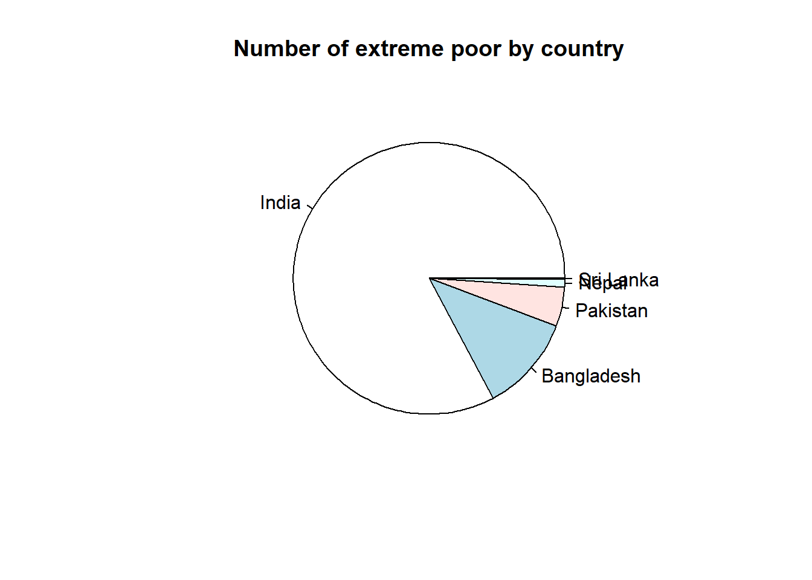
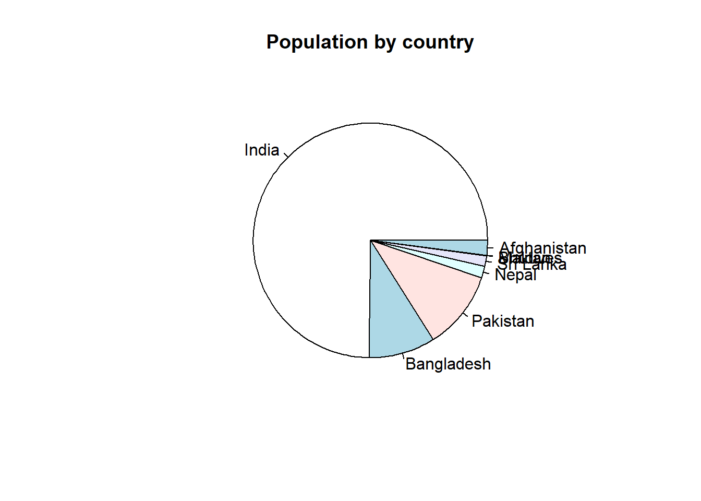

Chapter 1 Introduction to poverty measures in South Asia
According to the Poverty and Shared Prosperity Report (2018), Nigeria may already have overtaken India as the country with the most extreme poor in the world. At a regional level, the number of poor in South Asia dropped to 216 million people in 2015, compared to half a billion in 1990. Still, to achieve the Sustainable Development Goals, progress in poverty reduction needs to continue in India and the rest of South Asia.
In 2015, South Asia accounted for 29% of the people living in extreme poverty worldwide (216 million extreme poor in South Asia out of the estimated 736 million extreme poor worldwide). Four out of five extreme poor in the South Asia region reside in India. Despite a poverty rate of 13.4 percent, India’s large population of 1.3 billion results in a high absolute number of poor (approximately 176 million poor people in 2015). Bangladesh has made remarkable progress in reducing poverty, but its large population still maintains it in second place within the region in terms of absolute number of poor (24.4 million extreme poor in 2016). The third place is Pakistan, which has a larger population than Bangladesh, but a smaller amount of extreme poor (9.9 million extreme poor in 2015). Pakistan has seen a consistent and significant decline in poverty over the 14 years from 2001 to 2015. Bhutan and Sri Lanka are considered development success stories where extreme poverty has become rare, although a large share of the population subsists on slightly more than the extreme poverty line. In the Maldives, extreme poverty is nearly nonexistent according to the latest survey data.
## Parsed with column specification:
## cols(
## Country = col_character(),
## `Survey year(s)` = col_character(),
## Population = col_number(),
## `Number of poor (millions)` = col_double(),
## `Poverty rate (%)` = col_double(),
## `Poverty gap (%)` = col_double(),
## `Poverty gap/rate (%)` = col_double()
## )
| Country | Survey year(s) | Population | Number of poor (millions) | Poverty rate (%) | Poverty gap (%) | Poverty gap/rate (%) |
|---|---|---|---|---|---|---|
| India | 2011.5 | 1311.19 | 175.7 | 13.42 | 2.4 | 17.7 |
| Bangladesh | 2010 and 2016 | 160.53 | 24.4 | 15.16 | 2.8 | 18.1 |
| Pakistan | 2013.5 and 2015.5 | 190.38 | 9.9 | 5.23 | 0.7 | 13.2 |
| Nepal | 2010.17 | 28.57 | 2.0 | 7.03 | 1.4 | 19.8 |
| Sri Lanka | 2012.5 and 2016 | 25.00 | 0.2 | 0.77 | 0.1 | 11.7 |
| Bhutan | 2012 and 2017 | 0.81 | 0.0 | 1.66 | 0.3 | 16.3 |
| Maldives | 2009.5 | 0.37 | 0.0 | 4.08 | 0.8 | 20.3 |
| Afghanistan | NA | 35.53 | NA | NA | NA | NA |
## Linking to GEOS 3.6.1, GDAL 2.2.3, PROJ 4.9.3## Loading required package: sp
Even as much of the region leaves extreme poverty behind, poverty is becoming more entrenched and harder to root out in certain areas, particularly in countries burdened by violent conflict and weak institutions. Nepal experienced devastating earthquakes in 2015 and remains predominantly rural, with the highest share of labor force in agriculture (73%) in the region as of 2016. The Maldives were devastated by the 2004 tsunami while its tourism industry is seriously threatened by climate change. In the case of Afghanistan, poverty is increasing as violence continues to affect the security of livelihoods and economic activity in the country.
The World Bank’s poverty measures for South Asia provided by PovcalNet are shown in the following figure:

Table 1.2 provides a description of the poverty measures provided by PovcalNet:
## Parsed with column specification:
## cols(
## Measure = col_character(),
## Description = col_character()
## )| Measure | Description |
|---|---|
| Gini | A measure of inequality between 0 (everyone has the same income) and 100 (richest person has all the income). |
| Headcount | % of population living in households with consumption per person below the poverty line. |
| Mean | Average monthly household per capita consumption expenditure from the survey in 2011 PPP. |
| Median | Median of monthly household per capita consumption expenditure from the survey in 2011 PPP. |
| MLD | Mean log deviation is an index of inequality, given by the mean across the population of the log of the overall mean divided by individual income. |
| Population | Country’s population in millions. |
| Povgap | The mean shortfall of income from the poverty line. The mean is based on the entire population treating the nonpoor as having a shortfall of zero, and the shortfall is expressed as a proportion of the poverty line. |
| Povline | Poverty line in 2011 PPP per day. The default poverty line is $1.90 per day. |
| Squared | The mean squared shortfall of income from the poverty line. The mean is based on the entire population treating the nonpoor as having a shortfall of zero, and the shortfall is expressed as a proportion of the poverty line (and then squared). |
| Watts | This is the mean across the population of the proportionate poverty gaps, as measured by the log of the ratio of the poverty line to income, where the mean is formed over the whole population, counting the nonpoor as having a zero poverty gap. |